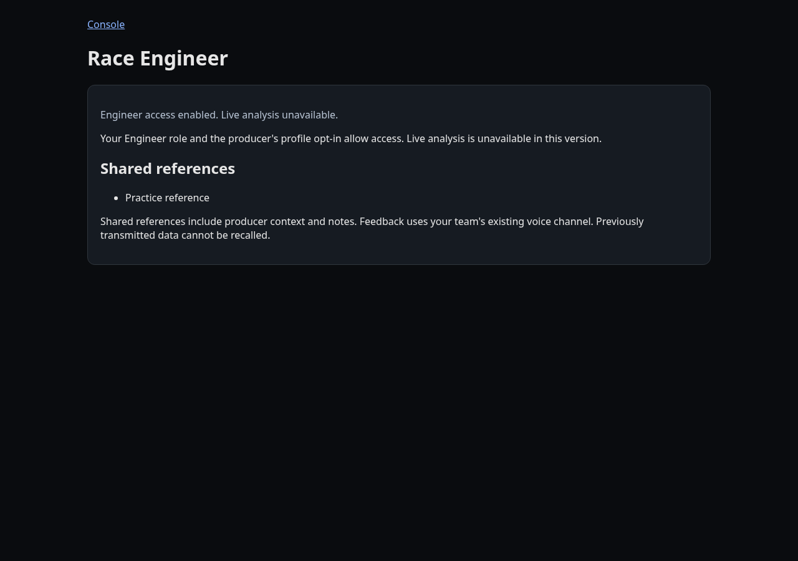
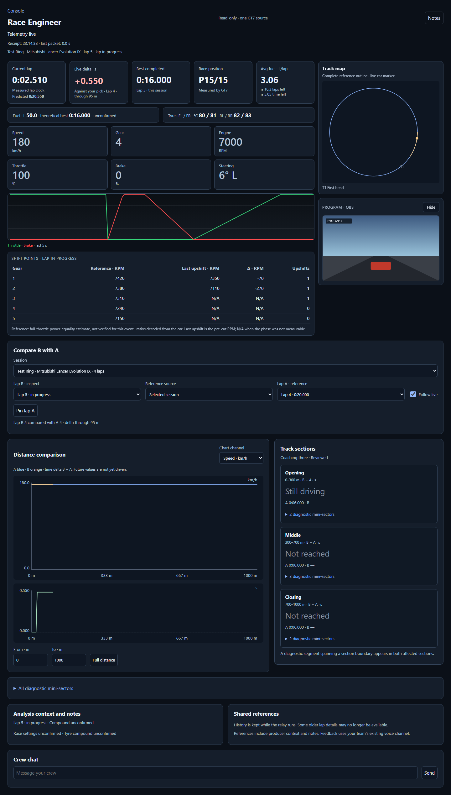
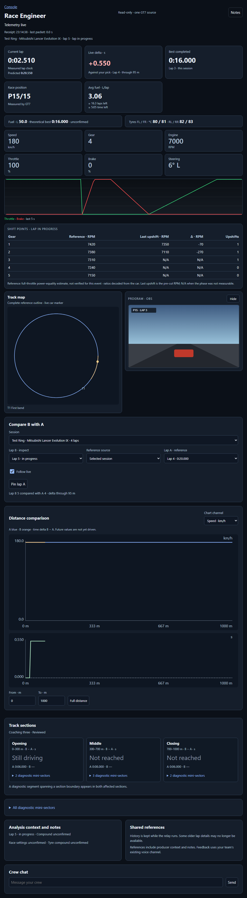
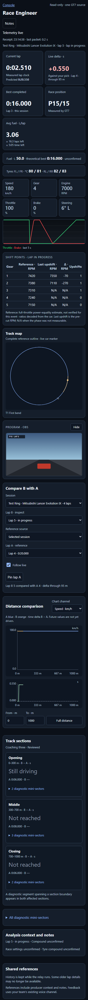
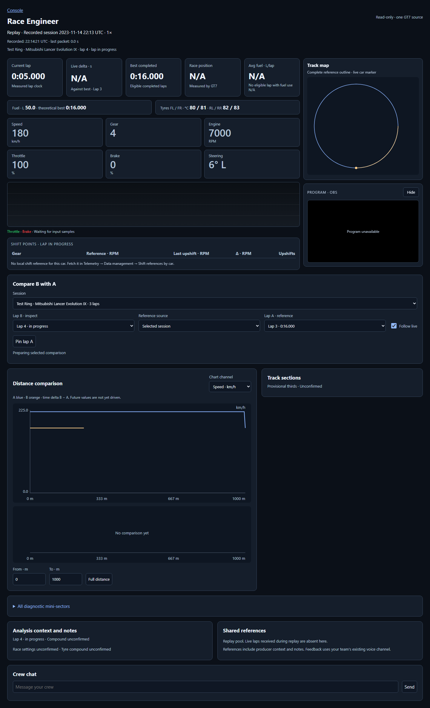

<!doctype html>
<html lang="en">
<head>
<meta charset="utf-8">
<meta name="viewport" content="width=device-width, initial-scale=1">
<link rel="icon" href="favicon.svg" type="image/svg+xml">
<link rel="apple-touch-icon" href="apple-touch-icon.png">
<title>Race Engineer · Onboarding · GT Racing Broadcast</title>
<link rel="stylesheet" href="vendor/reveal/dist/reveal.css">
<link rel="stylesheet" href="vendor/reveal/plugin/highlight/monokai.css">
<link rel="stylesheet" href="assets/deck.css">
</head>
<body data-role="race-engineer">
<div class="reveal"><div class="slides">

<section data-markdown><script type="text/template">
<span class="role-tag">Race Engineer · Onboarding</span>
# Race Engineer
A crew desk for live telemetry analysis of a **solo POV** broadcast.

- You read the one GT7 source of the producer's solo POV profile: live values, lap compare, shared references.
- It is a **human crew role**. The AI Race Engineer of the driver radio is a different thing.
- The desk has **no broadcast controls**.

Note: Welcome to the Race Engineer onboarding. The Race Engineer is a crew desk for live telemetry analysis of a solo POV broadcast. You read the one GT7 source of the producer's solo POV profile, with live values, lap comparison and references the producer shares. This is a human crew role. The AI Race Engineer of the driver radio is a different feature. And the desk has no broadcast controls at all.
</script></section>

<section data-markdown><script type="text/template">
## Getting in
<div style="display:flex;gap:36px;align-items:flex-start">

<div>

1. The producer or league admin ticks your **Race Engineer** column on the Crew tab. Producers have it already, every other role needs the tick.
2. The producer switches **Allow Race Engineer** on for the solo POV profile. It starts off.
3. Open your **Console** link and tap **Race Engineer**.

</div></div>

Access is checked on every request. Without role or opt-in the desk clears on its next poll.

[Console: Race Engineer access](https://github.com/jegr78/gt-racing-broadcast/wiki/Console#race-engineer-access)

Note: Getting in takes two switches and your usual Console link. First, the producer or the league admin ticks the Race Engineer column for you on the Sheet's Crew tab. Producers have the role already. Directors, commentators and Race Control need the explicit tick. Second, the producer switches on Allow Race Engineer in the Control Center for the solo POV profile. That switch starts off. Then open your Console link and tap Race Engineer. The relay checks your role and the producer's switch on every request. If either goes away, the open desk clears on its next poll.
</script></section>

<section>
<section data-markdown><script type="text/template">
## The desk


- Current lap with **Predicted** time, live delta with a trend arrow, best lap, race position, average fuel with laps and time left.
- Speed, gear, RPM, throttle, brake, steering, tyre temperatures. **Track map** and a still of the **OBS program**.

Note: This is the desk. Across the top you see the current lap with a predicted lap time, the live delta with an arrow for the trend, the best completed lap, the race position and the average fuel use with the laps and the time it still lasts. Below them come speed, gear, RPM, throttle, brake, steering and tyre temperatures. On the right sit the track map with the live car and a still of the running OBS program. Values refresh about twice per second. A value the desk does not have reads N A, and five seconds without packets dims the values.
</script></section>
<section data-markdown><script type="text/template">
## Tablet and phone
<div style="display:flex;gap:40px;align-items:flex-start;justify-content:center">


</div>

Tablet keeps charts beside the map. A phone stacks everything, main values in two columns.

Note: The desk also works on a tablet and on a phone. On a tablet the charts stay beside the map. On a phone everything stacks, the main values sit in two columns, and the comparison, the lap selection and the chart controls stay available.
</script></section>
</section>

<section data-markdown><script type="text/template">
## Compare laps
- **Lap B** is the lap you inspect, **Lap A** the reference. **Follow live** makes every new live lap B.
- Lap A comes from, highest first: a producer-shared **Reference source**, your own pick, the shared pin, the best lap.
- **Pin lap A** shares your lap A with every Engineer. The last pin wins.
- Charts: **A blue, B orange**, delta is B minus A. A loss carries a **+**.
- Pick a channel and a distance range. **Full distance** resets the zoom.

[Race Engineer](https://github.com/jegr78/gt-racing-broadcast/wiki/Race-Engineer#live-values-and-analysis)

Note: To compare laps, choose a session and Lap B, the lap you inspect. Lap A is the reference. With Follow live on, every new live lap becomes B. Lap A comes from the highest of these: a reference source the producer shared, then your own pick, then the shared pin, then the best lap. The line under the selection says which one applies. Pin lap A shares your lap A with every Engineer on the desk, and the last pin wins. In the charts A is blue, B is orange, and the delta is B minus A, so a loss carries a plus sign. Choose the chart channel and the distance range, and Full distance resets the zoom. Your selection and zoom are your own and do not change anyone else's desk.
</script></section>

<section data-markdown><script type="text/template">
## Shared references and replay
<div style="display:flex;gap:36px;align-items:flex-start">

<div>

- The **producer shares** recordings with a readable label. You cannot browse the archive.
- A revoked or replaced reference clears with a notice.
- The **producer** can replay a recording through the relay. The desk then reads **Replay** with the session and speed.

</div></div>

Live laps driven during a replay are missing from the live pool. The desk says so.

Note: References come from the producer. The producer shares a finished recording with a readable label, and it appears on your desk with its context and notes. You cannot browse the archive yourself. If the producer revokes or replaces a reference, it clears from your desk with a notice. The producer can also replay a recording through the relay. Your desk then reads Replay, with the recorded session and the speed, and it gets the same data as the broadcast HUD. Live laps driven during a replay are missing from the live pool, and the desk says so.
</script></section>

<section data-markdown><script type="text/template">
## Notes, chat and limits
- **Analysis context and notes** come from the producer, read-only.
- Feedback goes through the **Crew chat** on the desk and your team's voice channel.
- The desk **cannot** start a recording, edit context, assign tracks, delete or export recordings, run AI or touch the broadcast.
- Without a recording, live history disappears when the relay restarts.

Note: The desk shows the analysis context and notes the producer keeps, read-only. Your feedback goes through the crew chat at the bottom of the desk and through your team's voice channel. The desk cannot start a recording, edit context, assign tracks, delete or export recordings, run an AI analysis or change anything on the broadcast. Without a recording, the live history lives in memory only and disappears when the relay restarts.
</script></section>

<section data-markdown><script type="text/template">
## Recap
- Crew tab **Race Engineer** column plus the producer's **Allow Race Engineer** switch.
- Live values, lap compare A against B, **Pin lap A** for every Engineer.
- References and replays come from the producer.
- Crew chat and voice for feedback, no broadcast controls.

Go deeper:
[Race Engineer](https://github.com/jegr78/gt-racing-broadcast/wiki/Race-Engineer) ·
[Console](https://github.com/jegr78/gt-racing-broadcast/wiki/Console#race-engineer-access) ·
[Control Center](https://github.com/jegr78/gt-racing-broadcast/wiki/Control-Center#race-engineer-activation-and-reference-sharing)

Note: To recap. You need the Race Engineer column on the Crew tab and the producer's Allow Race Engineer switch. The desk shows live values and compares lap A against lap B, and Pin lap A shares a reference with every Engineer. Shared references and replays come from the producer. Feedback goes through the crew chat and your voice channel, and the desk has no broadcast controls.
</script></section>

</div></div>
<script src="vendor/reveal/dist/reveal.js"></script>
<script src="vendor/reveal/plugin/markdown/markdown.js"></script>
<script src="vendor/reveal/plugin/highlight/highlight.js"></script>
<script src="vendor/reveal/plugin/notes/notes.js"></script>
<script src="assets/deck.js"></script>
</body>
</html>
